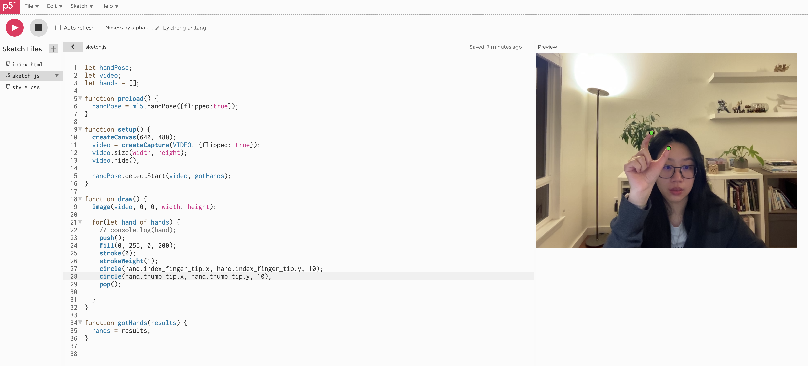
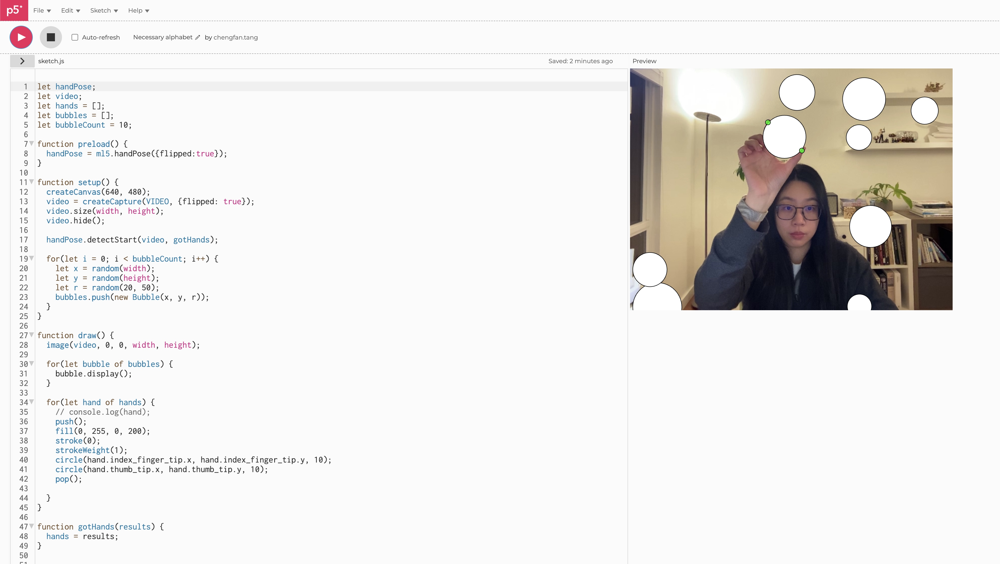
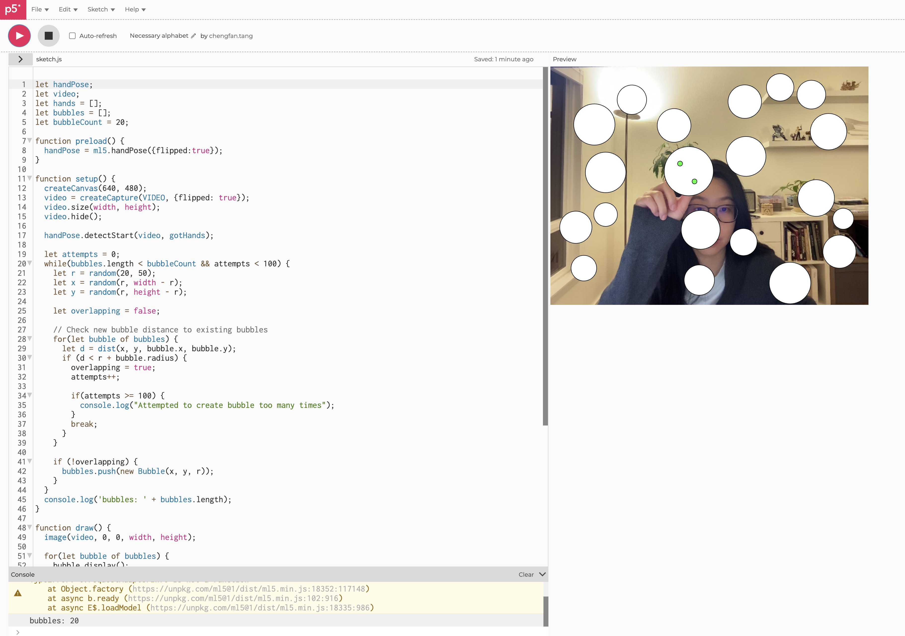
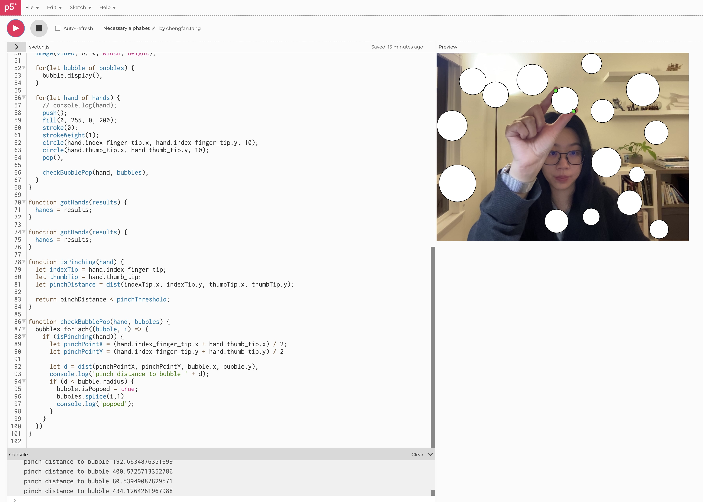
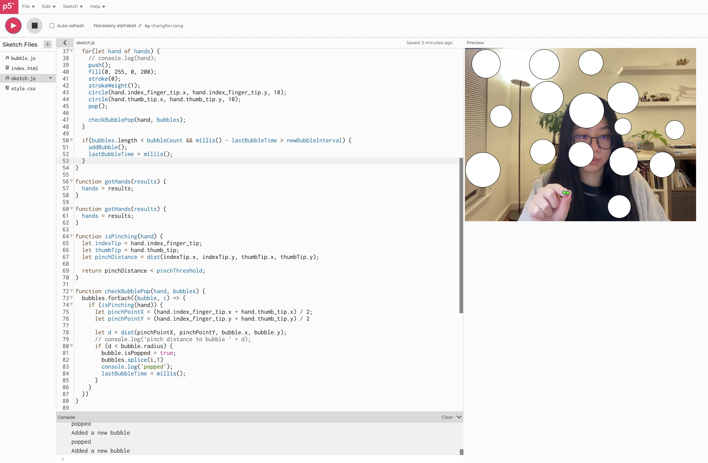
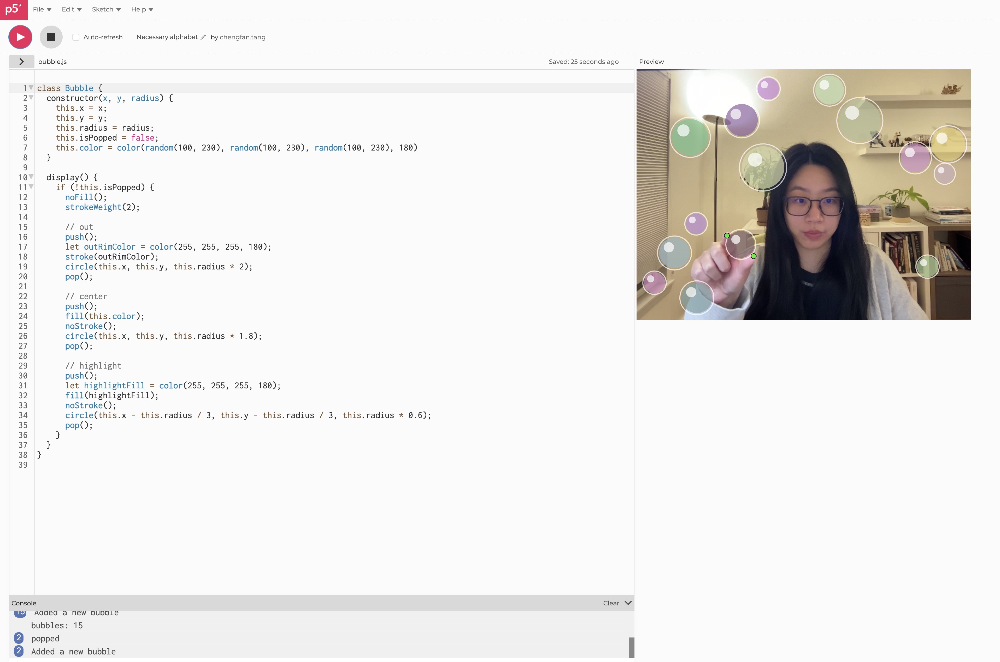

Bubble Popping
Ideation
The goal is to integrate machine learning(ml5.js) in p5.js to create an interactive prototype. Objects not physically connected to the computer should be used to interact with the system. My first idea is to make a interactive game using webcam and machine learning. I decided to make a bubble popping game that using hand gesture to pop the bubble and a scoring system. This uses the webcam and ml5.js to detect hand and using pinch gesture to pop the bubble.
Process
1. I started by exploring the ml5.js capabilities and going through the examples. I found HandPose Parts example where it draws a green circle with pinch gesture and finger tip distance. I copied the code and modified it to flip the video. Instead of draw a circle with pinch distance as size, I created two small circles to track the index and thumb finger tips.

2. I created bubble class with position and radius, and a display function to display it on canvas if the bubble is not popped. In the main canvas setup, I created bubbles randomly on the canvas.

3. The bubbles are created randomly on the canvas, but they can overlap, which is not ideal. I modified the bubble creation process to check the new bubble position with all existing bubbles using dist() to make sure they are not overlapping. In addition, I factored in the canvas edge so the bubble will not appear halway off the screen. A small trick I used here is to count how many times the bubble is trying to be created but failed. I found this helpful when trying to create large number of bubbles, but for smaller numbers like 20 or 25 it is probably not necessary.

4. In order to pop the bubble, I need a way to detect pinch gesture. I can calculate the distance between the index and thumb finger tips, and if the distance is smaller than a certain distance, the hand is pinching. I also need to make sure the pinching happens inside a bubble in order to pop, so I added a check to see if the center of the pinch gesture is inside a bubble.

5. It'd be more fun to continue adding new bubbles after popping one, so the game can go on. I use current time millis() and lastBubbleTime to keep track of the time. If the current time - lastBubbleTime is greater than a certain interval(3s in this case), a new bubble is created. I moved the code for the bubble creation to a new function addBubble(). During setup, I call addBubble() pre-determined times to create all the bubbles needed, and in the draw() function, I call addBubble() when the time interval is met.

6. The bubbles are kind ugly because they are only white circles. To make them look better, I created layers. An outer rim using only stroke, the center bubble with a smaller circle and blue color, and a off-center circle as the highlight. I also made them a bit more colorful by using random filling color.
Reflection
Becuase we need to use ml5.js, this project is more like design around the technology. I first wanted to make a popping game using spoon and forks, fork to pop a bubble and spoon to push one. However, after training the model, I found the image classification is not alwasy accurate, so that the game might not be fun to play. Players would not want the spoon to be recognized as a fork when pushing the bubble around. But what's more important is that I found the ml5.js image classification does not give the position of the object, only the confidence score. This made it impossible to develop the game. I then switched to hand gesture and it supports the hand/finger key point position.